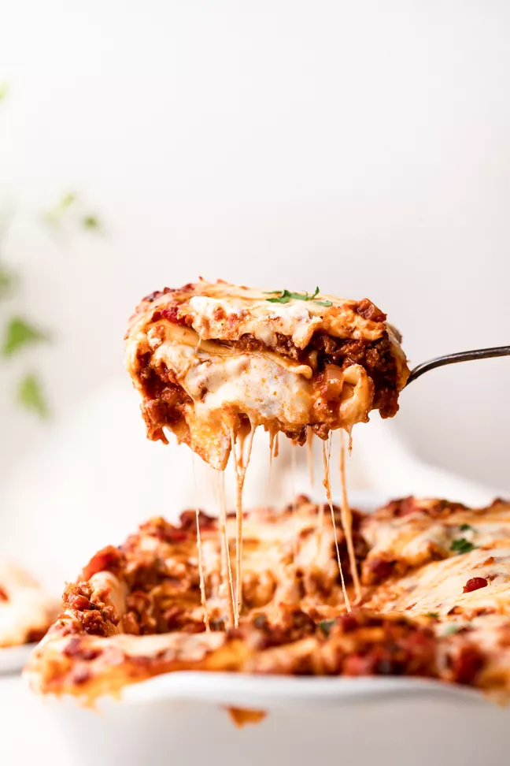

Lasagna

Description
This ooey gooey piece of deliciousness may take some preperation, but the payoff is well worth the effort.
Ingredients
For the meat sauce:
- 2 teaspoons extra virgin olive oil
- 1 pound ground beef chuck
- 1/2 medium onion diced (about 3/4 cup)
- 1/2 large bell pepper(green, red, yellow), diced (about 3/4 cup)
- 2 cloves garlic, minced
- 1 (28-ounce) can good-quality tomato paste
- 3 ounces tomato paste (half a 6-ounce can)
- 1 (14 ounce) can crushed tomatoes
- 2 tablespoons chopped fresh oregano, or 2 teaspoons dried oregano
- 1/4 cup chopped fresh parsley (preferably flat leafed), packed
- 1 tablespoon Italian seasoning
- 1 pinch garlic powder and/or garlic salt
- 1 tablespoon red or white wine vinegar
- 1 tablespoon to 1/4 cup sugar (to taste, optional)
- Salt
To assemble the lasagna
- 1/2 pound dry lasagna noodles
- 15 ounes ricotta cheese
- 1 1/2 pounds (24 ounces) mozzarella cheese, grated or sliced
- 1/4 pound (4 ounces) freshly grated Parmesan cheese
Steps
- Put pasta water on to boil. Add 1 Tbsp salt for every 2 quarts of water. This may take a while so prepare the sauce while the water is heating.
- Brown the ground beef on medum high heat with 2 teaspoons of olive oil.Remove the beef with a slotted spoon and drain off all but a tablespoon of fat.
- Add the diced bell pepper and onions to the skillet and cook for 4 or 5 minutes. And the minced garlic and cook for another 30 seconds before adding the beef back into the pan. Reduce heat to low, stir, and cook for 5 minutes.
- Transer pan into a medium sized pot and add the crushed tomatoes, tomato sauce, and tomato paste. Add the parsley, oregano, and seasonings to taste. Sprinkle with garlic powder or salt to taste. Add salt to taste but note that adding parmesan later will increase saltiness. Bring sauce to a low simmer and cook for 15 to 45 minutes, stirring often. Scrape the bottom of the pot to prevent sticking and scorches. Remove from heat
- By now the water should be boiling. Add the dry lasagna noodles, stir often to prevent from sticking. When ready, drain in a colander and rinse with cool water. Spread a little olive oil on a large rimmed baiking sheet and lay out the noodles, turning them so they coat a light coating of the oil.
- Heat the oven to 375 degrees F
- In a 9x13-inch casserole dish or lasagna dish, ladle a cup of sauce and spread it over the bottom of the dish. Arrange one layer of noodles over the sauce. Ladel a third of the remaning suace over the noodles. Sprinkle a layer of grated mozzarella and add half the ricotta by placing dollops every couple of inches. Sprinkle half the remaining grated parmesan over the ricotta. Apply the second layer of noodles, top it with remaining sauce. Add half of remaining mozzarella, the remaining ricotta, and remaining Parmesan. Finish with another layer of noodles, remaining sauce, and mozzarella.
- Cover with aluminum foil tented and bake for 45 minutes. Uncover the last 10 minutes for a crusty top or edges.
- Allow to cool for 15 minutes before serving